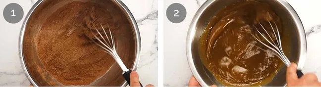
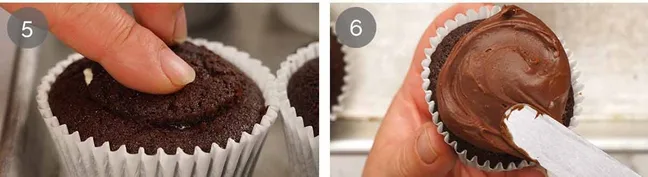

What Chocolate Cupcakes taste like
These are the cupcakes you make when you want someone to bite in, their eyes widen and they go mmmm! before declaring “wow, these are so much better than regular cupcakes. Chocolate cupcakes with vanilla cream inside taste rich, soft, and indulgent. The chocolate cupcake is moist and deep in cocoa flavour, slightly bitter in a pleasant way, which balances the sweetness. When you bite into the centre, the smooth vanilla cream adds a light, sweet, and creamy contrast.
Ingredients for Chocolate Cupcake
1.CHOCOLATE CUPCAKE

Flour - Plain all-purpose flour gives the cupcakes structure and helps them hold their shape without making them heavy or dense.
Cocoa powder - Unsweetened cocoa powder provides the main chocolate flavour and gives the cupcakes their deep, rich colour.
Brown sugar - Brown sugar keeps the cupcakes moist for longer and creates a softer crumb compared to white sugar.
Baking soda and baking powder - Used together to help the cupcakes rise properly and create a small, even dome.
White vinegar - Adds light acidity that activates the baking soda and improves the rise without affecting the taste.
Eggs - Bind all the ingredients together and help create a light, tender texture.
Oil - Makes the cupcakes extra moist and keeps them soft even after a few days.
Coffee powder - Enhances the chocolate flavour without giving a noticeable coffee taste.
Hot water - Blooms the cocoa powder, making the chocolate flavour stronger and richer.
Vanilla - Adds warmth and depth, rounding out the overall flavour of the cupcakes.
Salt - Balances the sweetness and brings out all the flavours in the cupcake.
2.Vanilla whipped cream filling

Cream - Use thickened cream (heavy cream in the US) or any cream labeled for whipping. Avoid pouring creams for cooking and very thick dollop creams, as they cannot be whipped. High-fat double cream (45%+) can also be used and is more stable, though it is richer.
Cream cheese - Used to stabilise the whipped cream so it holds its shape better. Make sure it is at room temperature so it mixes smoothly. Block cream cheese works best, but tub cream cheese can also be used for this recipe.
Vanilla extract - Adds flavour to the cream. Vanilla extract gives a better and more natural taste than imitation vanilla.
Sugar - Used in a small amount to lightly sweeten the cream. Icing sugar or powdered sugar can also be used.
3.Chocolate ganache frosting

Dark chocolate or semi-sweet chocolate - Use baking chocolate sold as melts, buttons, wafers, or chips, as these are designed to melt smoothly. For a more luxurious result, use good-quality block chocolate and chop it yourself. Avoid eating chocolate from the confectionery aisle, as it is made not to melt properly. Bittersweet chocolate (around 70% cocoa) can also be used, but the ganache will be less sweet.
Cream - Use thickened cream (heavy cream in the US) or any cream intended for whipping with 30-36% fat, which is the standard cream found in grocery stores.
How to make Chocolate Cupcakes
1.MAKE THE GANACHE FIRST

Heat the cream until it is steamy-hot but not boiling, then pour it over the chocolate so it is fully submerged.
Leave it for 7 minutes without stirring to allow the heat to melt the chocolate.
Mix gently with a rubber spatula until smooth, shiny, and fully combined.

Once mixed, the ganache will be runny and shiny, too thin to spread on cupcakes, so refrigerate it for about 2 hours, stirring occasionally, until it reaches a spreadable peanut-butter-like consistency. If it becomes too firm, let it sit at room temperature to soften.
2.MAKE THE CHOCOLATE CUPCAKES
Mix Dry - Whisk the cocoa (don't forget to sift out pesky lumps), flour, baking powder, baking soda and salt in a large bowl.
Mix wet - Whisk the eggs, oil, milk, sugar (yes this is a wet ingredient in baking), vanilla and vinegar in a separate bowl.

Finish batter - Pour the Wet into the Dry ingredients bowl and whisk to combine. Dissolve the coffee granules in the hot water then whisk that in. The batter will be fairly thin.
Fill cupcake liners - Fill the cupcake liners half full with batter. I find it easiest to do this with a jug because the batter is so thin. Don’t fill more than halfway, else the cupcakes will overflow and/or sink in the middle.

Bake for 22 minutes or until toothpick inserted into the middle comes out clean.
Cool in the pan for 5 minutes then transfer onto a cooling rack and fully cool for 1 1/2 hours. If the middle is even slightly warm, the cream will melt on contact.
3.FILLING AND FROSTING

Cut hole - Using a small knife held upright, cut a circle into the surface of the cupcake leaving a 1.25 cm / 1/2″ border. Use a spoon to scoop the cake out (I roll into balls to make cake truffles rolled in melted residual ganache!).
Trim excess off the cake you scooped out to leave a ~1cm/0.4″ thick lid. Make sure you keep the lids and cupcakes together so they fit properly - unless you are a baking genius who cuts lids exactly the same size for every single cupcake.

Whip stabilised cream - Beat the room temperature cream cheese, vanilla and sugar for 1 minute on high until soft and fluffy. Then add the cold cream and beat until firm peaks form.
Fill the cupcake cavities with cream, leaving room for the lid.
Lid - Pop the lid back on and press down lightly so it is almost flush with the surface of the cupcake.
Ganache frosting - Dollop a heaped tablespoon of ganache onto the cupcake then spread thickly. Decorate if desired - mine are sprinkled with chopped white chocolate. Chocolate sprinkles, mini hearts, shaved chocolate or little truffle balls come to mind, though I think ganache is pretty enough as it is!